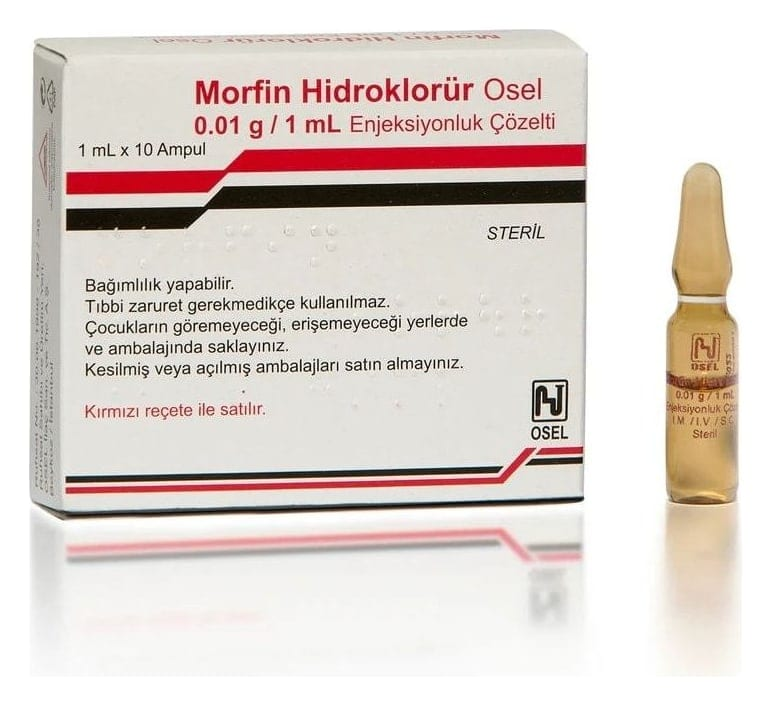

Morfin Hidroklorür Osel 0,01 g/ 1 ml Enjeksiyonluk Çözelti, 10 Adet

Ne için kullanılır
KT · Bölüm 1• MORFİN HİDROKLORÜR, etkin madde olarak narkotik ağrı kesiciler grubunda yer alan çok güçlü bir ağrı kesici olan morfin içeren bir ilaçtır. • Her bir kutusunda 1 mililitrelik 10 ampul bulunur. Her 1 mililitrelik ampul 0,01 g morfin hidroklorür ve yardımcı madde olarak sodyum klorür ve enjeksiyonluk su içeren berrak, renksiz veya soluk sarı-kahverengi çözeltidir.
• MORFİN HİDROKLORÜR aşağıdaki durumlarda kullanılır: Ani başlangıçlı (akut) ve şiddetli ağrılar: Kırık, çıkık, yaralanma, uzuvların kopması, ezilmesi, yanıklar, travmalar, miyokard enfartüsü, böbrek taşına bağlı spazm ağrıları (kolik ağrı), delici ülser ağrıları. Kanser ağrıları, kanserin başka bir organa sıçraması (metastatik karsinom), son dönem (terminal) hastalıklar: Bu hastalarda morfin uzun süre ve düzenli verilmelidir. Ameliyat sonrası ağrılar: Hastanın erken harekete geçmesine yardımcı olur. Doğum sırasında ağrı kesici olarak. Ortopedik ve tanısal girişimler. Akciğerlerin su toplaması (akciğer ödemi) ve kalbin aniden yetmezliğe girmesi (akut sol ventrikül yetmezliği): Morfin korku ve endişeyi gidermesi, oksijen sarfiyatını azaltması ve sıvı toplanmış akciğerden kanı çevresel vücut dokularına yöneltmesi ile bu durumda dramatik bir iyileşme sağlar. Ancak tahriş edici etkenlere bağlı oluşmuş akciğer ödeminde kullanılmamalıdır. Anestezi öncesi (preanestezik medikasyon): Doktorunuz bu ilacı size eğer sizde diğer anestezi öncesi ilaçların kullanılamadığı durumlar varsa kullanacaktır. Kalp-damar ameliyatlarında (kardiyovasküler cerrahi): Solunum yoluyla kullanılan anestezi ilaçlarının yerine ya da damar yoluyla kullanılan anestezi ilaçlarının kalp ve dolaşım işlevlerini olumsuz etkileyebileceği hastalarda bu ilaçların yerine kullanılabileceği bildirilmiştir.